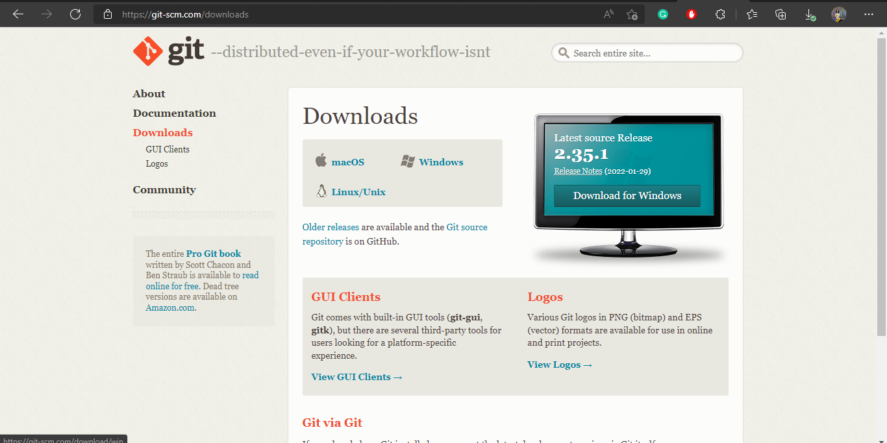

Follow the following steps to learn Git:
- Download Git by searching "download git"
- Make a New folder
- Open the folder in VScode
- Add files in the folder in VScode
- Open terminal in VScode by selecting View->Terminal
- Select Git Bash from the terminals available
- Initialze the repository by git init
- Check repository status by git status
- Add the git files to the staging area by git add . for all the files and git add "filename" for specific file
- Sign up toGithub
- Make a new repositoryin Github
- Add README.md by git add "README.md" and
git commit to save the changes to the local repository by git commit -m "first commit"
-m for the message. The message lets other developers know what changes have been made. - Add main branch by git branch -M main
and
Git remote add to add a new remote repository by git remote add origin "https://github.com/bsef19a007/bse19a007-git.github.io.git"
and origin is the shorthand name of the remote repository that we are cloning. - Add main branch by git branch -M main
and
Git remote add to add a new remote repository by git remote add origin "https://github.com/bsef19a007/bse19a007-git.github.io.git"
and origin is the shorthand name of the remote repository that we are cloning.



.png)

Below is the status after adding it to the staging area.
.png)
.png)
.png)